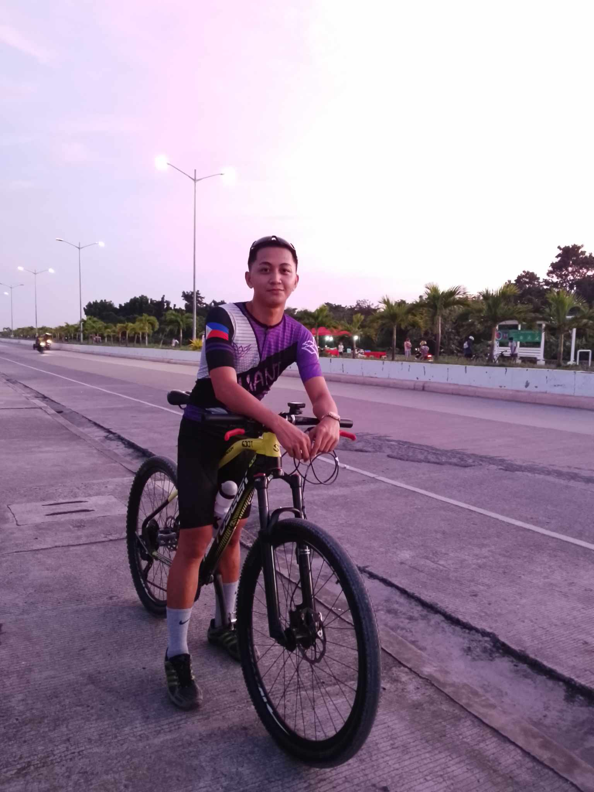

MY PERSONAL BLOG
CORDOVA RORO PORT

december 7, 2023. I decided blog with mybike went the Famous Roro in Cordova Cebu. You will never get lost going there as it is a very well known place.
Just wondering what's up with this place that many people really like to visit and hangout with.
Then later I found out that Roro is a Famous Food Court or Restaurant in Cordova that is located in Roro Port Road.
food court for everyone.
We can also see in here the Famous Third bridge that connected from Cebu to Cordova.
. It is located near the sea.
But as for now let me show you all what's in there.